ASUS Partner Alliance — 系統規格（公開唯讀版）
本文件彙整系統概述、前臺與後臺功能規格，內容與內部 Confluence 文件定期同步。若段落中出現「📎 圖片參考」標示，代表原文件含設計稿截圖，僅存於內部 Confluence 附件。
A. 系統 Overview
1. Revision History
Version | Date | Revised | Author |
|---|---|---|---|
1.0.0 | 2026-07-08 | 初版建立 | — |
2.0.0 | 2026-07-09 | 狀態機更新：Approved→Reviewing（中間審核態）、Publish→Approved（最終公開態）、Needs Revision→Editing；新增 Mail 編輯窗口規格；Magic Link sender 欄位（AM & BD 皆可發送）；Viewer 詢問改為 BD/Admin only；Partner Level 改為 Bronze/Silver/Gold；合作夥伴總覽移除完成度% | — |
2.1.0 | 2026-07-13 | 新增 Section 11：系統通知信（5 封通知：觸發時機、收件者、預設模板） | — |
2.2.0 | 2026-07-14 | One-Pager 流程調整：Approved 時系統自動生成 One-Pager Preview（非手動觸發）；AM 接續於 pm-one-pager-preview.html 決定是否發布。更新 Section 7 狀態機 Approved 說明、Section 9 範圍界定 | — |
2.2.1 | 2026-07-20 | Section 11 補充 N0 BD→AM 指派通知模板（11.2）；N2 收件者同步 Page C v2.1.5 規格（指派 AM + 建立此 Partner 的 BD）；修正 11.2 底部備註 Section 編號（4→3） | — |
2. 背景與動機
ASUS Partner Alliance 是一套針對合作夥伴（ISV / SI）所設計的資料管理系統，目標是將合作夥伴的解決方案資訊統一整理至公開目錄（Partner Catalog），提升品牌能見度並促進商業詢問轉換。
- 後台（需登入）：供 BD Program Manager、Admin、AM 使用，執行合作夥伴建立、AM 指派、邀請、審核（Reviewing → Approved）、One-Pager 發布及目錄管理
- 前台（無需登入）：公開可見的 Partner Catalog（含 Level chip 標籤），供 Viewer 瀏覽；Partner 透過 Magic Link 存取填表頁
3. 整體架構
| 後台（需登入） | ||
| BD Program Manager | Admin | AM |
| 合作夥伴總覽 新增合作夥伴 + 指派 AM Magic Link 邀請發送 Tier Checklist 管理 Viewer 詢問管理 | 人員管理 系統設定 BU/Region/AM 路由表 Viewer 詢問管理 | 發送 Magic Link 邀請 審核合作夥伴資料（Reviewing → Approved） One-Pager 生成 & 發布 |
| AM 或 BD 發送 Magic Link 邀請信 → Partner 點擊後進入填表頁（無需帳密） | ||
| 前台（無需登入） | ||
| Partner 填表頁 | 公開 Partner Catalog | |
| Magic Link 存取 填寫 10 欄位資料 上傳系統架構圖 | Viewer 瀏覽合作夥伴（含 Level chip：Bronze / Silver / Gold） Partner Profile 詳情頁 + One-Pager PDF 下載（AM 於 pm-one-pager-preview.html Approved 後） Viewer 詢問表單 → 轉發至 BD / Admin | |
4. 目標
- 集中管理合作夥伴資料，取代分散的人工收集流程
- 提供公開的 Partner Catalog，提升 ASUS 生態系的商業能見度
- 透過結構化流程（建立 → 指派 → 邀請 → 填表 → 審核 Reviewing → Approved → One-Pager）確保資料品質
- 前台／後台明確分離；以 Tier Checklist 標準化 Bronze / Silver / Gold 升級條件
5. 使用者角色
角色 | 存取範圍 | 主要任務 |
|---|---|---|
BD Program Manager | 後台（所屬 BU） | 建立合作夥伴記錄並同步指派 AM、發送 Magic Link 邀請（AM 未指派時）、管理 Tier Checklist、管理 Viewer 詢問 |
Admin | 後台（系統層） | 管理帳號（Admin / BD / AM）、維護系統設定與路由表、管理 Viewer 詢問 |
AM（Account Manager） | 後台（所屬 BU / Region） | 發送 Magic Link 邀請、審核合作夥伴資料（Reviewing → Approved / Editing）、生成與發布 One-Pager |
Partner | 前台（Magic Link） | 填寫 10 欄位資料 + 上傳系統架構圖 |
Viewer | 前台（公開） | 瀏覽 Partner Catalog（含 Level chip 篩選）、下載 One-Pager PDF、對合作夥伴發起詢問 |
角色互斥規則：BD Program Manager 與 Admin 為互斥角色，同一帳號不得同時持有兩者。
6. 主流程
| BD Program Manager 建立合作夥伴記錄，同步指派 AM bd-pm-add-partner.html | |
| 立即指派：BU → Region → AM 自動帶入 | 稍後指派：AM 欄位留空，Pipeline 後續補派（BD 可直接發送邀請） |
| ↓ | |
| AM 或 BD 發送 Magic Link 邀請信 pm-assign.html — magic_link_sender 自動記錄發送人（AM 或 BD） | |
| ↓ | |
| Partner 收到 Email → 點擊 Magic Link（前台，無需登入） partner-form.html | |
| ↓ | |
| 填寫 10 欄位資料 + 上傳系統架構圖 track() 即時更新進度 | |
| ↓ | |
| Partner 提交（狀態：Submitted） | |
| ↓ | |
| AM 後台審核 pm-review.html | |
| ① 點擊「Reviewing」 狀態 → Reviewing 尚未出現於前台公開目錄，AM 正式進入審核 | |
| ↓ 審核後二選一 | |
② ✓ 點擊「Approved」 ▸ 前台顯示該 Partner profile page | ③ ✗ 點擊「Editing」 狀態 → Editing Partner 收到通知 → 修改後重新提交 ▸ 生成新 Magic Link + 設定過期日 ▸ 觸發 Mail 編輯窗口（退回通知模板，含 Magic Link） 可手動調整內容 → Send → 通知寄出 |
| ↓ | Editing → Partner 重新填表 → 提交 → 回到 Submitted |
| 檢視 One-Pager 預覽（版型與 PDF 一致） Cancel → 不發布 Approved → 發布 one-pager(PDF) | |
| ↓ Approved | |
前台 viewer-profile.html 顯示 | |
Email 提醒排程： 邀請後第 7 天首發，之後每 14 天一封；Partner 提交後自動停止。
7. 合作夥伴狀態機
| Not Invited | BD 已建立記錄，尚未發送邀請 | ||||||
| ↓ BD 指派 AM；AM 或 BD 發送 Magic Link | |||||||
| Invited | 邀請信已發出，Partner 尚未開始填表 | ||||||
| ↓ Partner 開始填寫任一欄位 | |||||||
| In Progress | 填表進行中，尚未提交 | ||||||
| ↓ Partner 完成所有欄位並提交 | |||||||
| Submitted | 等待 AM 審核 | ||||||
| ↓ AM 點擊 Reviewing | |||||||
| Reviewing | AM 正在審核中，尚未出現於前台目錄 | ||||||
| |||||||
8. 非功能性需求（NFR）
類別 | 需求說明 |
|---|---|
安全性 | 後台所有頁面需 Session 驗證；Magic Link 有時效性（AM / BD 可設定，預設 7 天）；HTTPS 強制；CSRF 防護 |
效能 | 前台目錄頁需支援 SSR / SEO；分頁機制避免大量資料一次載入 |
可擴充性 | BU / Region / AM 路由表由 Admin 維護，不需修改程式碼即可新增路由 |
可用性 | Partner 填表進度自動追蹤（progress bar），避免遺漏欄位 |
稽核性 | 每次審核（Reviewing / Approved / Editing）均寫入 Audit Trail，不可刪除；Mail 編輯窗口的發送記錄同步寫入 |
One-Pager 一致性 | One-Pager 預覽頁版型需與 PDF 輸出完全一致（前端已確認可行） |
9. 範圍界定
範圍內（In Scope） | 範圍外（Out of Scope） |
|---|---|
合作夥伴建立、AM 指派、邀請、填表、審核（Reviewing → Approved）、發布 | 合作夥伴自行申請加入（無自助入口） |
後台角色權限管理（BD / Admin / AM） | Viewer 帳號管理 |
前台公開目錄 + Profile 頁 | 合作夥伴自行修改已核准資料 |
Magic Link 邀請機制（AM & BD 皆可發送）與提醒排程（首發 7 天 → 每 14 天） | Viewer 詢問的後續 CRM 整合 |
AM 審核 Audit Trail（含 Mail 發送記錄） | 多語系（i18n） |
Tier Qualification Checklist（Bronze / Silver / Gold 升級條件管理） | Logo / 系統架構圖解析度驗證（TBD） |
Level chip 標籤（Bronze / Silver / Gold）顯示於前台目錄與 Profile 頁 | |
Viewer 詢問表單（viewer-contact.html），轉發至 BD / Admin | |
One-Pager 生成與發布（AM 審核 Approved 時自動生成預覽；AM 於 pm-one-pager-preview.html 確認發布後，供 Viewer 在 viewer-profile.html 下載 PDF） |
10. 相關文件
11. 系統通知信
系統通知分為兩種發送機制：
發送方式 | 說明 | 人工介入 |
|---|---|---|
系統自動（Auto） | 觸發條件成立後由系統直接發出，無需人工操作 | 否 |
Mail 編輯窗口（Manual） | 系統預填模板後開啟 Mail 編輯窗口，AM 或 BD 可調整 Subject / Body，手動點擊 Send 後才正式寄出 | 是（可修改） |
11.1 通知一覽
# | 觸發時機 | 發送方式 | 收件者 | 備註 |
|---|---|---|---|---|
N0 | BD 指派合作夥伴給 AM（bd-pm-add-partner.html 建立或 Re-assign） | 系統自動 | AM | 通知責任人有新合作夥伴指派至其名下；含合作夥伴名稱、BU / Region；BD 尚未指派 AM 時不觸發 |
N1 | AM 或 BD 點擊「發送邀請」（pm-assign.html） | Mail 編輯窗口 | Partner | 含 Magic Link；有效期可設定（預設 7 天） |
N2 | Partner 提交表單（狀態 → Submitted） | 系統自動 | 指派 AM（主收）；建立此 Partner 的 BD（CC） | 提醒責任人進後台審核；Partner 不收此信 |
N3 | AM 點擊「Approved」（狀態 → Approved） | Mail 編輯窗口 | Partner | 核准通知模板；AM 可調整後手動送出 |
N4 | AM 點擊「Editing」（狀態 → Editing） | Mail 編輯窗口 | Partner | 退回通知模板；自動附上新 Magic Link；舊 Link 同步失效 |
N5 | 提醒排程（邀請後第 7 天首發，每 14 天一封） | 系統自動 | Partner | Partner 提交後自動停止 |
11.2 預設郵件模板
Subject | [ASUS Partner Alliance] 新合作夥伴指派至您的名下 |
To | {AM_EMAIL} |
Body | 您好 {AM_NAME}， BD Program Manager 已將合作夥伴 {COMPANY_NAME} 指派至您的名下，請登入後台確認並視情況發送邀請信。 合作夥伴：{COMPANY_NAME} ▸ [前往後台管理]（pm-dashboard.html） 如有問題，請聯繫 BD Program Manager： ASUS Partner Alliance System |
※ 發送方式：系統自動。BD 指派或 Re-assign AM 時立即觸發；BD 建立合作夥伴時未指派 AM 則不觸發。
Subject | [ASUS Partner Alliance] 您受邀填寫合作夥伴資料 |
To | {PARTNER_EMAIL} |
Body | 您好， ASUS 邀請 {COMPANY_NAME} 加入 ASUS Partner Alliance，請點擊以下連結填寫合作夥伴資料，完成後您的解決方案將刊登於 ASUS Partner Catalog。 ▸ [開始填寫資料]（Magic Link，有效期至 {EXPIRY_DATE}） 請填寫以下 10 個欄位並上傳系統架構圖： 如有任何問題，請聯繫您的 Account Manager： ASUS Partner Alliance Team |
※ 發送方式：Mail 編輯窗口。AM 或 BD 可在窗口調整 Subject / Body 後手動 Send。
Subject | [Action Required] {COMPANY_NAME} 已提交資料，請進行審核 |
To | {AM_EMAIL}（主收）；{BD_EMAIL}（CC，若已指派 AM） |
Body | 您好 {AM_NAME}， 合作夥伴 {COMPANY_NAME} 已完成資料填寫並提交，請登入後台進行審核。 提交時間：{SUBMITTED_AT} ▸ [前往審核]（pm-review.html） 請在收到此通知後 5 個工作天內完成審核。 ASUS Partner Alliance System |
※ 發送方式：系統自動。Partner 提交後立即觸發，無需人工介入。Partner 不會收到此封。
Subject | [ASUS Partner Alliance] 恭喜！您的資料已通過審核 |
To | {PARTNER_EMAIL} |
Body | 您好， 恭喜！{COMPANY_NAME} 的合作夥伴資料已通過 ASUS Account Manager 審核，即日起正式刊登於 ASUS Partner Catalog。 ▸ [查看您的 Partner Profile]（viewer-profile.html） 如日後需要更新資料或有任何問題，請聯繫您的 Account Manager： 感謝您成為 ASUS Partner Alliance 的一員。 ASUS Partner Alliance Team |
※ 發送方式：Mail 編輯窗口。AM 點擊「Approved」後觸發，可調整 Subject / Body 後手動 Send。
Subject | [ASUS Partner Alliance] 您的資料需要修改，請重新提交 |
To | {PARTNER_EMAIL} |
Body | 您好， 感謝您提交 {COMPANY_NAME} 的合作夥伴資料。您的資料尚有部分需要修改，請點擊以下連結重新填寫並提交。 AM 備註： ▸ [修改資料]（新 Magic Link，有效期至 {EXPIRY_DATE}） 注意：此為新的填寫連結，先前收到的連結已失效，請使用此連結進行修改。 如有疑問，請聯繫您的 Account Manager： ASUS Partner Alliance Team |
※ 發送方式：Mail 編輯窗口。AM 點擊「Editing」後系統自動生成新 Magic Link，觸發窗口，AM 可調整後手動 Send。
Subject | [Reminder] 您的 ASUS Partner Alliance 資料尚未提交 |
To | {PARTNER_EMAIL} |
Body | 您好， 提醒您，{COMPANY_NAME} 的 ASUS Partner Alliance 資料尚未完成提交。請點擊以下連結繼續填寫。 ▸ [繼續填寫資料]（Magic Link，有效期至 {EXPIRY_DATE}） 如果您已完成填寫但仍收到此提醒，請忽略此信。如有任何問題，請聯繫您的 Account Manager： ASUS Partner Alliance Team |
※ 發送方式：系統自動。排程：邀請後第 7 天首發，之後每 14 天一封；Partner 提交後自動停止。
模板管理：N1–N5 的預設 Subject 與 Body 模板均可由 System Admin 於後台 admin-settings.html Section 3「通知信模板管理」統一設定與編輯。Mail 編輯窗口（N1、N3、N4）中，AM 或 BD 發送前仍可再手動調整個別信件內容。
B. 前臺規格（Viewer Catalog and Partner Form）
1. Revision History
Version | Date | Revised | Author |
|---|---|---|---|
1.0.0 | 2026-07-08 | 初版建立 | — |
2.0.0 | 2026-07-09 | 狀態機更新（Approved→Reviewing、Publish→Approved、Needs Revision→Editing）；Magic Link AM&BD 皆可發送、magic_link_sender 欄位；Viewer Contact Email+Message 必填、BD/Admin only、處理記錄；one_pager_status Published→Approved；Partner Level Bronze/Silver/Gold | — |
2.0.1 | 2026-07-09 | 前台版型說明更正：Section 4.1「Apple 風格全版面 Tile」→「全版面 Tile」；Section 5 兩筆「Apple 全版面 Tile」→「全版面 Tile」 | — |
2.1.0 | 2026-07-13 | 新增草稿儲存規格（Section 3.1）：Partner 可隨時儲存草稿，後台狀態自動同步為 In Progress（Invited → In Progress）；新增 Section 3.5 多人同時編輯衝突處理：後儲存優先，觸發含本機時間戳的衝突警告對話框，提供覆蓋 / 取消（Refresh）選項 | — |
2.1.1 | 2026-07-20 | Section 3.1 補充 Editing 後新 Magic Link 預載舊草稿規格；Section 3.4 partner-confirm.html 補充行為說明（提交後立即顯示；Magic Link 未逾期重開顯示感謝頁，不可重新填寫） | — |
2.1.2 | 2026-07-20 | Section 4.1 補充 Partner Tile 卡片顯示欄位規格表（8 個欄位：Logo、Level Chip / Approved badge、公司名稱、Solution Name、公司簡介摘要、Tags、公司網站、主要硬體型號），附 42 Gears 範例 | — |
2.1.3 | 2026-07-29 | Section 3.2 Target Vertical 最多選項 3 → 5；所有文字欄位字符上限改為 1000；System Architecture Diagram 補充上傳規格（單檔、移除後重傳、10 MB）；Section 3.5 新增離開頁面防呆提示規格；Section 4.1 公司網站補充可點擊連結規格；Section 4.3 viewer-contact 新增表單驗證規格（必填、1000 字符上限） | — |
2. 前台架構概覽
前台分三種存取路徑，皆無需後台帳密：
路徑 | 頁面 | 存取方式 | 說明 |
|---|---|---|---|
公開瀏覽 | viewer-catalog.html, viewer-profile.html | 無需登入 | 公開展示已核准的合作夥伴資料，含 Level chip 標籤；已 Approved 之合作夥伴提供 One-Pager PDF 下載 |
Viewer 詢問 | viewer-contact.html | 無需登入 | Viewer 填寫詢問表單，轉發至 BD / Admin |
Magic Link | partner-form.html, partner-confirm.html | 一次性連結 | Partner 填寫 10 欄位資料 |
前台主流程：
| Partner 填表路徑（Magic Link） | Viewer 瀏覽路徑 |
| AM 或 BD 發送 Magic Link 邀請信（後台觸發） ↓ Partner 點擊連結 → partner-form.html ↓ 填寫 10 欄位 + 上傳系統架構圖 track() 即時更新進度環；可隨時 Save Draft（任一欄位非空即可） ↓ 提交 → partner-confirm.html（Next Steps） ↓ AM 後台審核（pm-review.html） ↓ ① 核准 → Reviewing → Approved（觸發 Mail 通知） ② 退回 → Editing（生成新 Magic Link）→ 修改後重新提交 | viewer-catalog.html （公開目錄，含 Level chip 篩選） ↓ 點選合作夥伴 Tile ↓ viewer-profile.html （詳情頁，含 Level chip 標籤） ↓ 「下載 One-Pager (PDF)」（AM Approved 後顯示） 或 點擊「聯絡此合作夥伴」 ↓ viewer-contact.html → 轉發至 BD / Admin |
| Approved 合作夥伴出現於 viewer-catalog.html，供 Viewer 瀏覽 | |
3. Partner 填表模組
3.1 Magic Link 機制
項目 | 規格 |
|---|---|
有效期 | AM & BD 皆可設定（預設 7 天） |
重發限制 | Partner 不可自行重發；AM & BD 皆可在後台手動補發 |
過期行為 | 顯示過期提示，引導聯絡 magic_link_sender（AM 或 BD，依發送人決定） |
magic_link_sender | 記錄發送人姓名（AM 或 BD）；AM 未指派時由 BD 發送，magic_link_sender = BD 姓名；過期頁顯示聯絡該發送人；BD 發送後仍可後續 assign AM |
連結格式 | 含 one-time token；使用後作廢 |
自動提醒排程 | 首封提醒：邀請後第 7 天；後續：每 14 天；Partner 提交後自動停止（預設開啟） |
每日上限 | 每位 Partner 每日最多收到 1 封（系統硬限制） |
草稿儲存 | 任一欄位非空即可點擊 Save Draft；儲存後後台狀態自動同步為 In Progress（Invited → In Progress）；可多次儲存，每次覆蓋前次草稿 |
Editing 後新連結草稿 | AM 標記 Editing 並生成新 Magic Link 後，新連結預載 Partner 先前儲存的最後一次草稿內容；Partner 可直接在既有草稿基礎上修改並重新提交，無需從空白開始 |
分享與多人填寫 | Magic Link 可分享給他人協作填寫（同一連結可多人開啟）；多人同時編輯時，後儲存者觸發衝突警告（詳見 3.5） |
3.2 必填欄位（10 個）
ID | 欄位名稱 | 說明 |
|---|---|---|
intro | Corporate Introduction | 公司簡介（最多 1000 字符） |
f1 | Solution Name | 解決方案名稱（最多 1000 字符） |
f2 | Target Vertical | 目標產業 Tag Picker（最多五個）；每個 Tag 最多 1000 字符 |
f3 | Target Use-case | 目標應用場景（最多 1000 字符） |
f4 | Hardware Components | 硬體組成（最多 1000 字符） |
f5 | Software Components | 軟體組成（最多 1000 字符） |
f6 | Challenges | 解決的挑戰（最多 1000 字符） |
f7 | Solution Description | 解決方案說明（最多 1000 字符） |
f8 | Technology | 核心技術（最多 1000 字符） |
f9 | Value Propositions | 價值主張（最多 1000 字符） |
另需上傳：System Architecture Diagram
項目 | 規格 |
|---|---|
格式 | |
檔案數量 | 最多 1 個檔案；已有上傳檔案時，需先移除現有檔案，才可重新上傳 |
檔案大小上限 | 10 MB |
上傳行為 | 觸發 simulateUpload()（Prototype） |
3.3 填表流程
| Partner 開啟 Magic Link | |
| ↓ | |
| 連結是否有效？ | |
| ✓ 連結有效 → 顯示 partner-form.html 逐一填寫 10 欄位（intro、f1–f9） 上傳系統架構圖（simulateUpload()） track() 即時更新進度環 任一欄位非空 → 啟用 Save Draft 按鈕 點擊 Save Draft → 後台狀態自動同步為 In Progress（原 Invited 狀態時更新） 多人同時編輯時，後儲存者觸發衝突警告（詳見 3.5） 所有欄位非空 + 上傳完成 → 啟用 Submit 按鈕 點擊提交 狀態：In Progress → Submitted AM 收到通知 導向 partner-confirm.html（Next Steps 時間軸） | ✗ 連結已過期 顯示錯誤頁 提示聯絡 magic_link_sender（AM 或 BD） AM / BD 在後台手動補發 |
3.4 提交確認頁（partner-confirm.html）
項目 | 規格 |
|---|---|
顯示時機 | Partner 點擊提交後立即導向（一次性頁面） |
頁面內容 | 提交成功訊息 |
Magic Link 重開行為（已提交後，連結未逾期） | Partner 再次開啟連結（狀態為 Submitted / Reviewing / Editing / Approved），顯示 partner-confirm.html（感謝頁）；不可重新填寫欄位，亦無法查看後台審核進度 |
Magic Link 逾期後行為 | 顯示過期提示，引導聯絡 magic_link_sender
|
3.5 草稿儲存與多人編輯衝突處理
草稿儲存規格：
項目 | 規格 |
|---|---|
啟用條件 | 任一欄位非空即可點擊 Save Draft（不需填寫全部 10 欄位） |
後台狀態同步 | 首次點擊 Save Draft 後，後台狀態由 Invited 自動更新為 In Progress；Submit 後狀態再更新為 Submitted |
覆蓋規則 | 每次儲存草稿均覆蓋前次；不保留歷史草稿版本 |
離頁保存 | Partner 離開後重開 Magic Link，可繼續填寫草稿（前提：Magic Link 尚未過期） |
多人同時編輯衝突處理：
Magic Link 可分享給多人協作填寫。當多人同時開啟同一 Magic Link 並進行編輯時，採用「後儲存優先 + 衝突警告」機制：
| Person A 正在填寫 → 點擊 Save Draft → 儲存成功 | |
| ↓ Person B 同時在填寫，亦點擊 Save Draft | |
| 系統偵測：此表單在 B 最後載入後已有更新（A 的儲存記錄存在） | |
| ↓ | |
| 顯示衝突警告對話框： This content was last updated on MM/DD at HH:MM (抓取 User 本機時間). Do you want to overwrite it? | |
| Confirm : 覆蓋（Overwrite） B 的當前填寫內容寫入系統 A 的草稿被覆蓋；顯示儲存成功提示 | Cancel : 取消（Cancel） 頁面 Refresh，帶入 A 的最新草稿內容 B 未儲存的變更遺失；頁面回到 A 儲存後的狀態 |
衝突偵測機制：
- 頁面載入時，系統記錄當前草稿的
last_saved_at時間戳 - 點擊 Save Draft 時，系統比對伺服器端
last_saved_at是否晚於頁面載入時記錄的值 - 若伺服器端
last_saved_at更新（代表有其他人在中途儲存），則觸發衝突警告 - 警告對話框中顯示的時間戳為使用者瀏覽器本機時間（依 GTM 時區自動換算）
離開頁面防呆提示：
項目 | 規格 |
|---|---|
觸發條件 | Partner 填寫任一欄位後，未點擊 Save Draft 或 Submit 即嘗試離開頁面（關閉分頁、上一頁、導向其他 URL） |
提示訊息 | Your changes haven't been saved. If you leave now, they will be lost. |
按鈕 | Cancel（返回繼續填寫）/ Discard（確認離開，放棄變更） |
4. 公開目錄模組
4.1 Viewer Catalog（viewer-catalog.html）
功能 | 規格 | 示意 |
|---|---|---|
技術架構 | SSR（Server-Side Rendering）+ SEO 友善 | 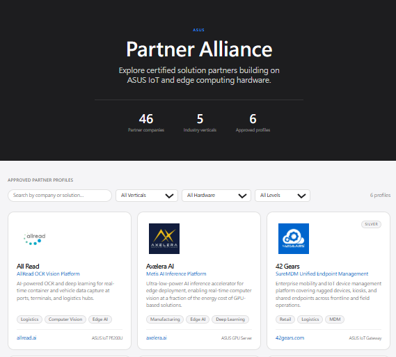 |
版型 | 全版面 Tile 排版，無 Sidebar | |
分頁 | 每頁 20 筆；篩選後自動回第 1 頁；URL 參數 ?page=N | |
Search bar | 支援搜尋 Company Name ; Wording : Search by company | |
篩選條件 | BU（ECBU/ISGBU）、Partner Type（ISV/SI）、Partner Level（All Levels / Gold / Silver / Bronze） | |
Level Chip | Bronze / Silver / Gold 合作夥伴在 Tile 卡片上顯示 Level chip 標籤（見下方規格） | |
SEO | Page Title = ASUS Partner Alliance — Partner Catalog；含 og 標籤；合作夥伴名稱出現於靜態 HTML | |
展示條件 | 僅顯示 status = Approved 的合作夥伴 |
Partner Tile 卡片顯示欄位：
位置 | 欄位名稱 | 資料來源 | 範例（42 Gears） | 示意 |
|---|---|---|---|---|
卡片左上 | Partner Logo |
| PA-42Gears.jpg | 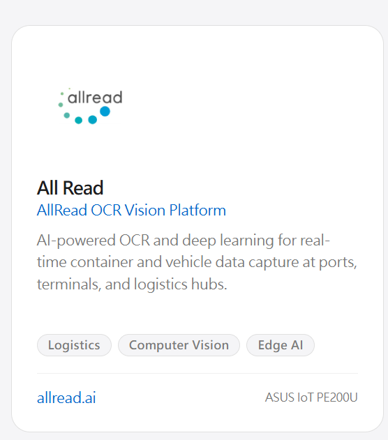 |
卡片右上 | Level Chip |
| Silver chip | |
Logo 下方第 1 行 | 公司名稱 |
| 42 Gears | |
第 2 行 | Solution Name |
| SureMDM Unified Endpoint Management | |
第 3 行 | 公司簡介摘要 |
| Enterprise mobility and IoT device management platform covering rugged devices, kiosks, and shared endpoints across frontline and field operations. | |
簡介下方 | Tags（最多 3 個） |
| Retail、Logistics、MDM | |
卡片底部左 | 公司網站 |
| 42gears.com | |
卡片底部右 | 主要硬體型號 |
| ASUS IoT Gateway |
卡片連結行為：公司網站（company_website）欄位為可點擊超連結，點擊後在新分頁開啟（target="_blank"）。
Level Chip 樣式規格：
Level | CSS Class | 背景色 | 文字色 | 邊框色 | 顯示條件 |
|---|---|---|---|---|---|
Bronze | .tier-chip.tier-bronze | #fff7ed | #9a3412 | #fed7aa | level = Bronze |
Silver | .tier-chip.tier-silver | #f5f5f7 | #7a7a7a | #e0e0e0 | level = Silver |
Gold | .tier-chip.tier-gold | #fffbeb | #92400e | #fde68a | level = Gold |
Level 篩選行為：
- 下拉選單選項：All Levels / Gold / Silver / Bronze
- 選取後以 data-tier 屬性過濾 Tile 卡片
- 篩選器與 BU / Type 篩選器可同時作用（AND 邏輯）
4.2 Viewer Profile（viewer-profile.html）
URL 規則：
欄位 | 說明 |
|---|---|
格式 | /partners/{bu}-{region}-{profileName} |
範例 | /partners/ecbu-emea-allread |
生成邏輯 | bu + region 轉小寫；profileName = 公司名稱轉小寫、空格改連字符、去除特殊字元 |
唯一性 | 一旦生成不允許修改；slug 衝突時加後綴 -2、-3 |
SEO 規格：
標籤 | 內容 |
|---|---|
Page Title | {公司名稱} | ASUS Partner Alliance |
Meta Description | Corporate Introduction 前 150 字 |
Canonical Tag | 指向正式 URL；避免重複索引 |
og:title / og:description | 同 Page Title / Meta Description |
頁面內容：
- 顯示全部 10 欄位 + 系統架構圖
- Partner Level Badge（Bronze / Silver / Gold）— 同 Catalog Chip 色彩規範
- CTA「Contact Partner」→ 連結至 viewer-contact.html
- One-Pager PDF 下載按鈕（僅在 AM 後台 Approved 後顯示，詳見下方規格）
- 代表範例頁：All Read（已完整填寫）
One-Pager PDF 下載規格：
項目 | 規格 |
|---|---|
顯示條件 | one_pager_status = Approved（AM 在後台 pm-one-pager-preview.html 點擊 Approved 後） |
按鈕文字 | 下載 One-Pager (PDF) |
按鈕位置 | CTA 區域，與「Contact Partner」並排或次要按鈕樣式 |
點擊行為 | 直接下載 PDF 檔案（Content-Disposition: attachment） |
未 Approved 時 | 按鈕不顯示，不影響其他頁面內容 |
4.3 Viewer Contact（viewer-contact.html）
目標： Viewer 發起對特定合作夥伴的詢問，由系統轉發至後台 BD / Admin
項目 | 規格 |
|---|---|
存取 | 無需登入；從 viewer-profile.html 點擊 CTA 進入 |
頁面標題 | Contact {公司名稱} — ASUS Partner Alliance |
顯示 Partner 資訊 | 顯示公司名稱 + 解決方案名稱（context header） |
必填欄位 | 所有欄位必填
|
表單驗證 | 送出時若任一欄位為空，對應欄位下方顯示： |
提交行為 | 前台顯示「Inquiry sent.」成功訊息；後台新增一筆至 pm-contact-list.html |
後端轉發 | 詢問轉發至後台；僅 BD / Admin 可在後台 pm-contact-list.html 存取；AM 不可見 |
處理記錄 | 後台清單頁顯示處理人員姓名 + 操作時間戳；所有操作寫入 Action Log（不可刪除） |
Viewer 詢問流程：
| Viewer 在 viewer-profile.html 點擊「Contact Partner」 | |
| ↓ | |
| 開啟 viewer-contact.html（帶入 Partner context：公司名稱 + 解決方案名稱） | |
| ↓ | |
| 填寫 Name + Company + Email + Message（所有欄位必填） | |
| ↓ | |
| 點擊送出 | |
| ↓ | |
| 前台 顯示「Inquiry sent.」成功訊息 | 後台 pm-contact-list.html 新增一筆詢問記錄 記錄 Viewer 姓名、Email、公司、訊息內容 |
| ↓ | |
| BD / Admin 均可在後台 pm-contact-list.html 存取並跟進處理（AM 不可見） 清單頁顯示處理人員姓名 + 最後操作時間戳 | |
5. 前台頁面版型配置
頁面 | 版型 | 導覽列 | Sidebar | 樣式來源 |
|---|---|---|---|---|
viewer-catalog.html | 全版面 Tile | 無 | 無 | Inline styles |
viewer-profile.html | 全版面 Tile | 無 | 無 | Inline styles |
viewer-contact.html | 簡潔表單版型 | 無 | 無 | Inline styles |
partner-form.html | 自訂版型 | partner-nav（44px 黑色置頂，含 SVG 進度環） | 無 | assets/style.css |
partner-confirm.html | 自訂版型 | partner-nav（44px 黑色置頂） | 無 | assets/style.css |
6. 待確認事項（TBD）
項目 | 說明 | 負責人 |
|---|---|---|
One-Pager 設計參考 | 目前樣本：OnePager/cthings-one-pager.html；是否有其他公司參考設計？ | TBD |
Logo / 系統架構圖解析度規格 | Partner 上傳的 Logo 與系統架構圖最低解析度、檔案格式限制待定 | TBD |
7. 風險
風險項目 | 等級 | 說明 | 對應措施 |
|---|---|---|---|
Magic Link 過期 | 中 | Partner 未及時填表，連結失效 | AM / BD 可手動補發；AM 未指派時 BD 可直接補發；預設 7 天有效期 |
公開未審核資料 | 高 | 前台 API 若未驗證狀態，可能洩漏草稿資料 | 後端 API 獨立驗證 status = Approved |
提交後資料鎖定 | 中 | Partner 提交後無法自行修改 | AM 標記 Editing 後自動生成新 Magic Link 並通知 Partner（Mail 編輯窗口） |
多人同時編輯覆蓋 | 中 | Magic Link 可分享，多人同時填寫時可能互相覆蓋資料 | 衝突偵測機制（last_saved_at 比對）+ 覆蓋確認對話框；取消則 Refresh 帶入最新內容 |
Viewer 詢問垃圾訊息 | 中 | viewer-contact.html 無登入門檻，可能收到濫用訊息 | 考慮加入 CAPTCHA 或速率限制 |
SSR 效能 | 低 | 合作夥伴數量大時 SSR 渲染較慢 | 考慮 SSG/ISR；加 CDN 快取層 |
URL slug 衝突 | 低 | 同 BU+Region 下公司名稱相同時 slug 重複 | 含 bu + region 前綴降低機率；衝突時加後綴 -2 |
One-Pager 預覽與 PDF 不一致 | 中 | 前端預覽版型與實際 PDF 輸出若有落差，影響 AM 判斷 | 前端已確認可行；需驗收測試確保一致性 |
C. 後台功能規格 (CMS)
0. 登入畫面（Login）
適用範圍：僅後台角色（Admin / BD / AM）登入頁面；Partner 端透過 Magic Link 直接進入 partner-form.html，不經此登入頁，免帳密。
項目 | 規格 | Mock up |
|---|---|---|
標題 | Global Partner CMS | 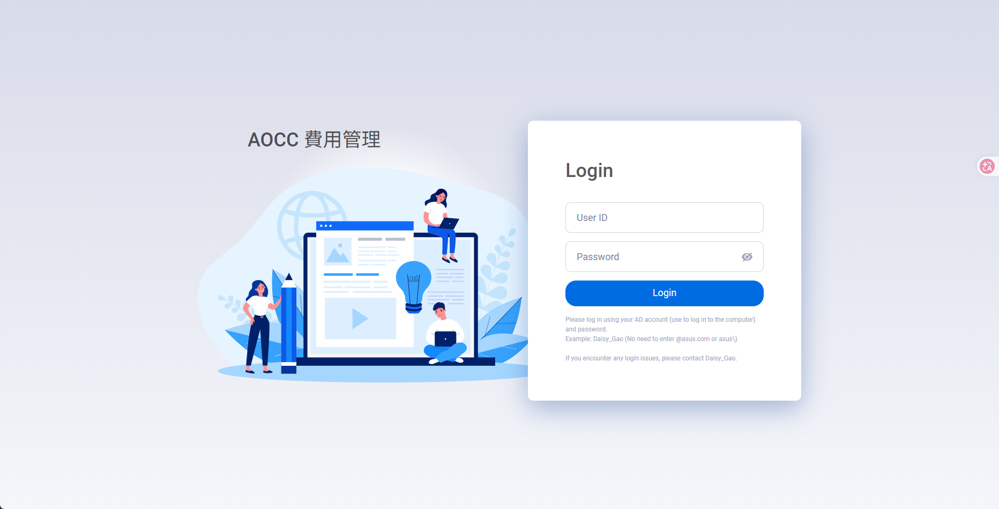 |
User ID | 文字輸入框 | |
Password | 密碼輸入框，含顯示 / 隱藏切換 | |
Login 按鈕 | Primary 按鈕；點擊後驗證 AD 帳號密碼 | |
說明文字 | Please log in using your AD account (use to log in to the computer) and password. | |
問題聯絡 | If you encounter any login issues, please contact Tungjen_Tsai. |
R1. Revision History
2026-07-31
Version | Date | Revised | Author |
|---|---|---|---|
1.0.0 | 2026-07-08 | 初版建立 | — |
2.0.0 | 2026-07-09 | 狀態機更新（Approved→Reviewing、Publish→Approved、Needs Revision→Editing）；新增 Mail 編輯窗口規格；Magic Link AM & BD 皆可發送；Viewer 詢問改為 BD/Admin only；Partner Level Bronze/Silver/Gold；移除合作夥伴清單填表完成度%；新增 Bronze Tier Checklist（TBD）；移除 BD 2 項操作規則；更新資料模型欄位 | — |
2.0.1 | 2026-07-09 | BU 路由表更正：ECBU/Americas → 移除（Henry Tseng 改歸屬 ISGBU/EMEA）；ISGBU/Global Diego Hernandez → Silvia Kuo；Region 選項更新（ECBU → EMEA only；ISGBU → EMEA, APAC, Global） | — |
2.0.2 | 2026-07-13 | admin-settings.html 新增 Section 4「通知信模板管理」：System Admin 可統一編輯 N1–N5 預設 Subject / Body 模板 | — |
2.1.0 | 2026-07-13 | 三角色新增功能總表（3.0 BD、4.0 Admin、5.0 AM）；Section 3.2 新增 Partner Logo / Icon 欄位 + Partner 填寫欄位清單（intro, f1–f9）；詢問管理（pm-contact-list.html）由 AM 5.5 移至 BD 3.5；AM 5.6 One-Pager 更名 5.5 | — |
2.1.1 | 2026-07-14 | One-Pager 流程調整：AM 點擊 Approved 後系統自動生成 One-Pager Preview（非手動觸發）；更新 Section 5.4 審核流程、Section 5.5 觸發條件與生成流程、Section 7 頁面清單 | — |
2.1.2 | 2026-07-14 | 新增通知信 N0（BD→AM 指派通知）至 admin-settings.html Section 4 模板管理；補充 N0–N5 預設英文 Subject / Body 完整模板內容 | — |
2.1.3 | 2026-07-14 | Section 3.5 詢問管理對齊 HTML 實作：狀態修正為 New / Replied / Closed（3 狀態英文）；操作按鈕對齊 HTML；移除非原型功能（處理中、指派負責人、重新開啟、Action Log）；Stat Cards 對齊 HTML；Section 6.3 Inquiry 資料模型同步更新 | — |
2.1.4 | 2026-07-14 | Section 3.5 補充 Forward to partner / Reply directly Mail 窗口欄位規格；Reply directly 改為觸發 Mail 窗口並將狀態改為 Replied；Close 新增必填 Close reason 確認視窗；Section 6.3 新增 close_reason 欄位 | — |
2.1.5 | 2026-07-20 | BD 存取範圍改為所屬 BU（非跨 BU）；admin-settings Section 1 補充 5 個通知開關完整收件人規格；Section 2 路由表移除 AM 欄位（AM 改由 User List 建立帳號時選定）；Section 3（原 Section 4）通知信模板管理重新編號，移除「公開目錄設定」Section；Section 5.1 pm-dashboard 大幅更新（5 張 KPI 計數卡、Pipeline 7 狀態可點擊篩選、Search bar、按鈕矩陣）；Magic Link 有效期改以小時計算；逾期後所有提醒停止；AM 停用後不可重新 Active | — |
2.2.0 | 2026-07-21 | Section 3.1 BD 合作夥伴總覽 KPI 計數卡對齊 bd-pm-dashboard.html 實作：移除 ISV Partners / SI Partners，補入 In Review（data-status=submitted）/ Approved（data-status=approved） | — |
2.3.0 | 2026-07-29 | BD 權限擴充：3.1 More 改為狀態對應按鈕矩陣（新增 Send Invite / Resend / Review / Continue Review / One-Pager 入口），BD 可執行 AM 全部操作（限所屬 BU）；新增 AM/BD 併發規則；3.1 KPI 補 Not Invited（5 張）；5.1–5.5、Section 7 措辭改為 AM / BD；magic_link_sender 改記錄實際發送人；{AM_NAME}/{AM_EMAIL} 解析為實際操作人、BD 操作時 N3/N4 CC 指派 AM | — |
2.3.1 | 2026-07-29 | Section 3.2 BU 欄位改為自動帶入（依 BD 所屬 BU 鎖定，Admin 可選）；Section 4.1 停用帳號補充接任者規則（同角色同 BU/Region、Partner 資料自動歸屬接任者、可留空後補） | — |
2.3.2 | 2026-08-03 | Section 4.1 新增接任狀態欄位規格（pending / resolved），Admin 可於使用者清單事後補指派接任者；Section 6.2 新增 successor_id、succession_status 欄位 | — |
2.3.3 | 2026-08-03 | Section 4.1 停用警示對話框範例補充 BD 情境（Joanne Chiu · Business Development · ECBU），與既有 AM 範例並列顯示 | — |
2.3.4 | 2026-08-05 | 新增「0. 登入畫面（Login）」章節：標題改為 Global Partner CMS，說明文字聯絡人改為 Tungjen_Tsai；補充後台登入 mockup | — |
2.4.0 | 2026-08-06 | 調整 Partner 可見與編輯權限：BD 合作夥伴總覽僅顯示本人目前名下 Partner；內部合作夥伴目錄顯示全 ASUS Approved Partner，BD 本人名下 Edit、其他 View，Admin 全部 Edit；重寫 BD / Admin / AM 帳號 Inactive 與 Successor 規則，新增 created_by、owner_id、owner_role 資料模型並移除 pending 交接流程 | — |
2.4.1 | 2026-08-06 | Section 4.1 新增「User Role／Scope 變更交接規則」：編輯 User Role、BD BU、Admin → BD、AM BU / Region 時執行 Partner Impact Check；有 Partner 時須依原 Role / Scope 指定 Successor，交接與 User 更新須以同一 transaction 完成；Section 6.2 新增 transition_history | — |
2. 後台存取控制
| 使用者造訪後台頁面 | |
| ↓ | |
| Session 是否有效？ | |
| ✓ YES — Session 有效 繼續存取，維持在當前頁面 依角色進入對應首頁： BD → bd-pm-dashboard.html Admin → admin-users.html AM → pm-dashboard.html | ✗ NO — Session 無效 導向登入頁，輸入帳號密碼 ✓ 驗證成功 → 依角色導向首頁 ✗ 驗證失敗 → 顯示錯誤訊息，重新輸入 |
角色 | 存取範圍 | 可操作模組 |
|---|---|---|
BD | 合作夥伴總覽僅顯示本人目前名下的 Partner；內部合作夥伴目錄可查看全 ASUS 的 Approved Partner | 合作夥伴總覽、新增、內部目錄、Tier Checklist、詢問管理（BD/Admin only）；內部目錄中本人名下顯示 Edit，其他顯示 View |
Admin | 跨 BU（系統層） | 人員管理、系統設定、詢問管理（BD/Admin only）；內部合作夥伴目錄可 Edit 全部 Partner |
AM | 所屬 BU / Region | 我的合作夥伴、發送邀請、邀請信管理、審核（Reviewing → Approved）、One-Pager 生成 & 發布 |
角色互斥規則：同一帳號不可同時持有兩者角色，UI 層與後端驗證層均需阻擋。
3. BD 模組
3.0 功能總表
功能 | 對應頁面 | 說明 |
|---|---|---|
合作夥伴總覽 | bd-pm-dashboard.html | 僅顯示目前歸屬本 BD 名下的 Partner（owner_id = current_user_id）；AM 篩選 Pills、狀態對應操作按鈕矩陣、KPI 計數卡均以可見資料計算 |
新增合作夥伴 | bd-pm-add-partner.html | 植入合作夥伴基本資料（含 Partner Logo 上傳）；BU → Region → AM 三層級聯指派 |
內部合作夥伴目錄 | bd-catalog.html | 顯示全 ASUS 的 Approved Partner；BD 對本人名下 Partner 顯示 Edit，其他顯示 View；Admin 對全部 Partner 顯示 Edit |
Tier Qualification Checklist | bd-pm-checklist.html | Bronze / Silver / Gold 升級條件評估清單；儲存後供所有 BD 帳號共用 |
詢問管理 | pm-contact-list.html | Viewer 詢問匯入後台（BD / Admin only）；Forward to partner、Reply directly、Close |
3.1 合作夥伴總覽（bd-pm-dashboard.html）
目標：僅顯示目前歸屬本 BD 名下的 Partner，集中管理本人負責的合作夥伴進度。
可見範圍：以 owner_id = current_user_id 篩選；Partner 初始 owner 為建立者，帳號停用並完成交接後改為 Successor。BU 不再作為合作夥伴總覽的主要可見條件。
權限規則：BD 所有操作（Send Invite / Resend / Review / Approve / Re-assign / One-Pager）僅限本人目前名下的 Partner。
併發規則：AM 與 BD 可同時對同一 Partner 操作（含 AM Reviewing 中 BD 執行 Resend / Re-assign）；狀態與 magic_link_sender 以最後操作為準，所有動作均寫入 Audit Trail（actor / timestamp / action）。
功能 | 說明 | Mockup | |||||||||||||||||||||||
|---|---|---|---|---|---|---|---|---|---|---|---|---|---|---|---|---|---|---|---|---|---|---|---|---|---|
AM 篩選 Pills | All / 各 AM 姓名，切換後即時重算 5 個 KPI 計數卡 | 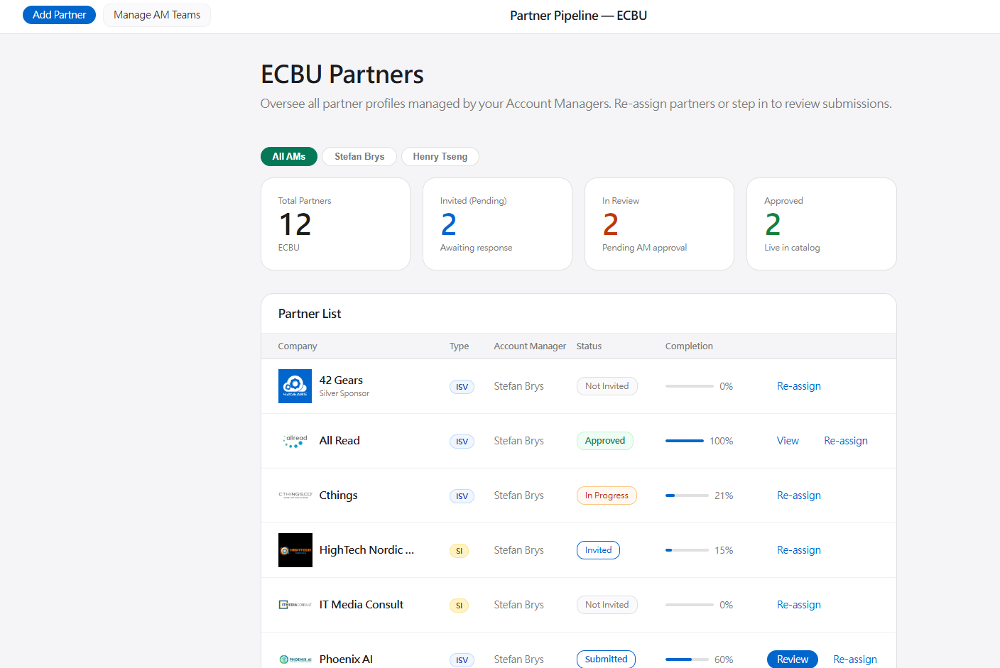 | |||||||||||||||||||||||
文字搜尋 | 即時過濾 Partner 名稱 | ||||||||||||||||||||||||
狀態篩選 | Not Invited / Invited / In Progress / Submitted / Reviewing / Approved / Editing | ||||||||||||||||||||||||
合作夥伴清單 |
| ||||||||||||||||||||||||
| 排序條件 | 預設依公司名稱升冪（0–9、A–Z）；各欄位標題提供升冪 / 降冪排序切換按鈕 |
KPI 計數卡（動態計算）：
計數卡 | 計算來源 |
|---|---|
Total Partners | 所有可見 rows |
Invited (Pending) | data-status="invited" rows |
In Review | data-status="submitted" rows |
Approved | data-status="approved" rows |
3.2 新增合作夥伴（bd-pm-add-partner.html）
目標： BD 植入合作夥伴基本資料，並可於建立時一步完成 AM 指派
表單欄位規格（BD 填寫）：
欄位 | 輸入型態 | 選項 / 格式 | 必填 | 說明 | Mockup |
|---|---|---|---|---|---|
Company Name | 文字輸入 | — | ✓ | 合作夥伴公司名稱，用於顯示與 slug 生成 | 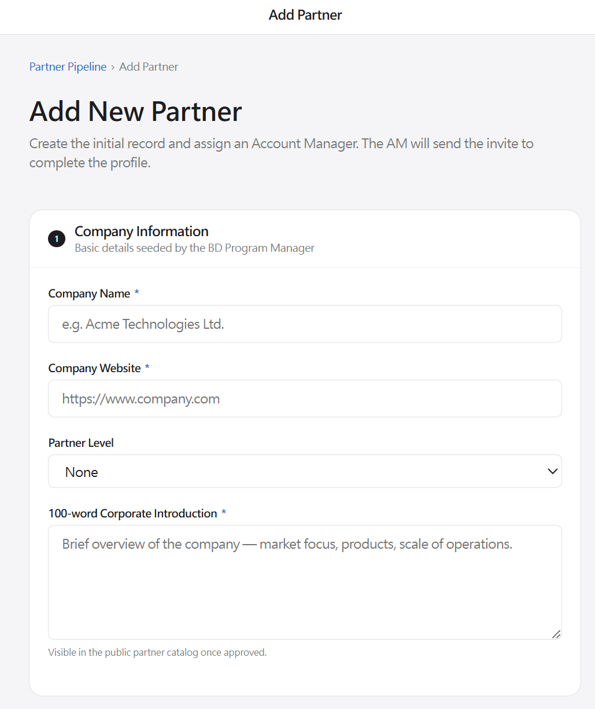 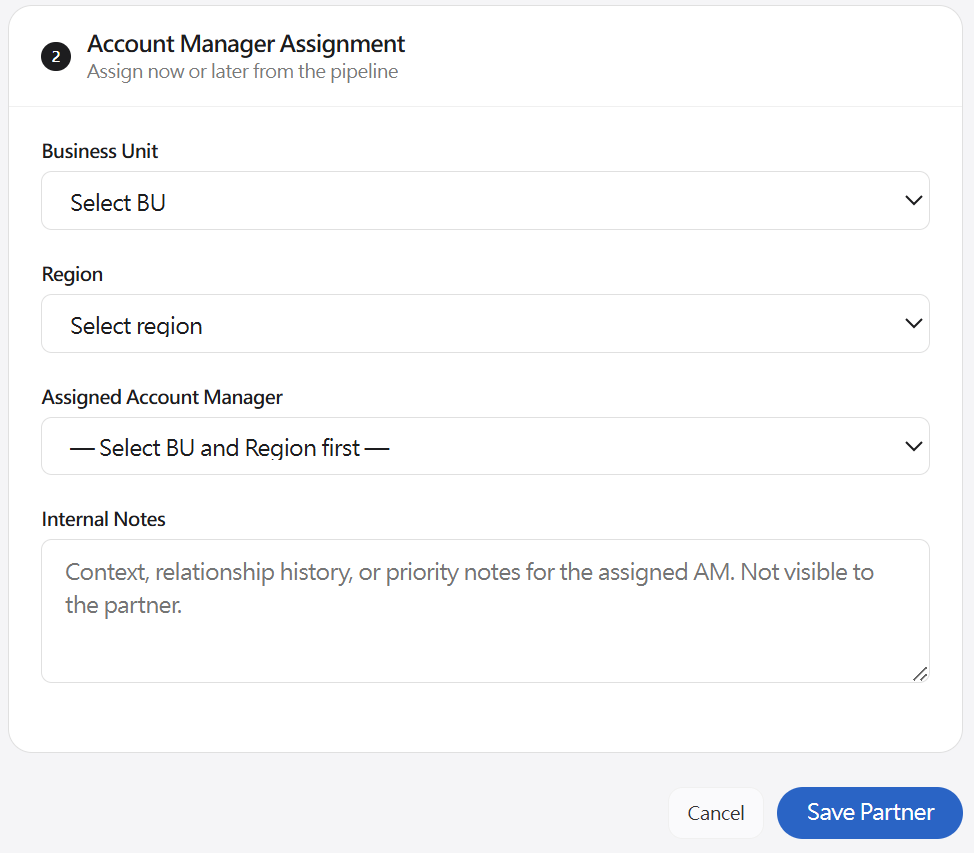 |
Company Website | 文字輸入 | https:// | ✓ | 合作夥伴公司 URL | |
Partner Logo / Icon | 圖片上傳 | JPG / PNG / SVG；建議正方形，最小 200×200px (此依設計建議) | ✓ | 顯示於前台目錄 Tile（80×80 object-fit:contain）與 One-Pager；命名規則：PA-{CompanyName}.jpg | |
Partner Type | 單選（Radio / Dropdown） | ISV（Independent Software Vendor） | ✓ | 決定 KPI 計數分類與前台篩選標籤；建立後可編輯 | |
Partner Level | 單選（Dropdown） | Bronze / Silver / Gold | 選填 | 初始預設 None；BD 可依 Tier Checklist 升級至 Silver / Gold / Bronze | |
BU | 自動帶入（唯讀，依創建者所屬 BU 鎖定）；Admin 可手動選擇 | ECBU / ISGBU | ✓ | BD 建立時自動帶入其帳號所屬 BU，不可修改；Admin 建立時可自由選擇 ECBU / ISGBU | |
Region | 單選（Dropdown，依 BU 動態填入） | ECBU → EMEA | ✓ | 選完 BU 後自動縮小選項範圍 | |
Account Manager | 自動帶入（唯讀，依 User List 所屬 BU + Region）；可手動覆寫 | 依 BU + Region 對應 | 選填 | 自動解析後可手動覆寫；留空則 Partner 列顯示「Assign」按鈕 | |
AM 備註 | 多行文字 | — | 選填 | 業務背景、關係歷史、優先度；僅後台可見，不對 Partner 顯示 |
Partner 填寫欄位（10 個必填，由 Partner 透過 Magic Link 自行填寫）：
ID | 欄位名稱 | 說明 |
|---|---|---|
intro | Corporate Introduction | 公司簡介（100 字以內） |
f1 | Solution Name | 解決方案名稱 |
f2 | Target Vertical | 目標產業
|
f3 | Target Use-case | 目標應用場景 |
f4 | Hardware Components | 硬體組成 |
f5 | Software Components | 軟體組成 |
f6 | Challenges | 解決的挑戰 |
f7 | Solution Description | 解決方案說明 |
f8 | Technology | 核心技術 |
f9 | Value Propositions | 價值主張 |
另需上傳：System Architecture Diagram（partner-form.html simulateUpload()）
指派流程（三層級聯選單）：
| BD 選擇 BU | |
| ↓ | |
| 系統：Region 下拉自動填入（依 BU 過濾） | |
| ↓ | |
| BD 選擇 Region | |
| ↓ | |
| 系統：AM 欄位自動帶入對應 AM（依 User List 所屬 BU + Region） | |
| ↓ | |
| 立即指派 填寫 AM 備註（選填） 業務背景、關係歷史、優先度 | 稍後指派 AM 欄位留空 Partner 列表顯示「Assign」，可從 Pipeline 補指派 |
| ↓ | |
| AM 收到指派通知（系統自動 Email N0） | |
| AM 由 User List 建立帳號時依 BU + Region 選定；路由表（admin-settings.html Section 2）僅定義 BU / Region / Type 結構，不含 AM 欄位 | |
3.3 內部合作夥伴目錄（bd-catalog.html）
目標：提供後台使用者查看全 ASUS 已核准合作夥伴，並依角色與目前歸屬決定 Edit / View 權限。
項目 | 規格 |
|---|---|
存取 | 需後台登入（與前台公開目錄不同） |
顯示範圍 | 全 ASUS、跨 BU 的所有 Approved Partner |
BD — 本人名下 | Edit：當 |
BD — 非本人名下 | View：可查看完整資料與內部欄位，但所有欄位唯讀，不可送出修改 |
Admin | Edit：不受 owner / BU 限制，可編輯全部 Partner |
內部欄位 | 包含 AM 負責人、目前 Owner、BU / Region、Level 等管理資訊 |
後端驗證 | 更新 API 必須再次驗證角色與 owner 權限，不可只依前端按鈕顯示控制 |
3.4 Tier Qualification Checklist（bd-pm-checklist.html）
目標： BD 依 Bronze / Silver / Gold Checklist 評估合作夥伴是否符合升級條件
存取： 需後台登入，BD PM sidebar → Qualification → Tier Checklist
Tier | 預設 Checklist 項目 | 項目數 | Mock up |
|---|---|---|---|
Bronze | TBD（待 Silva / Joanne 確認） | TBD | 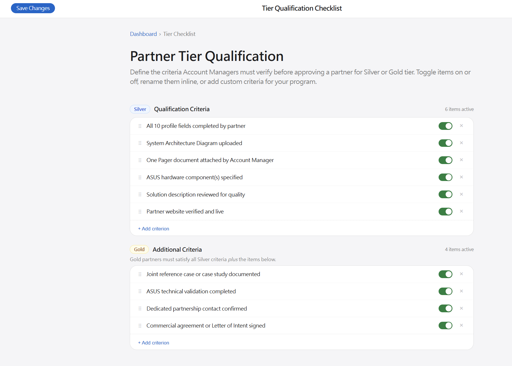 |
Silver | 1. All 10 profile fields completed by partner | 6 項 | |
Gold | 1. Joint reference case or case study documented | 4 項 |
操作規則：
- Checklist 儲存後供所有 BD 帳號共用
- TBD： Bronze / Silver / Gold 完整 Checklist 題目待 Silva / Joanne 確認後更新
3.5 詢問管理（pm-contact-list.html）
存取角色：BD / Admin only（AM 不可見此頁面）
功能 | 說明 | Mock up | |||||||||||||||||
|---|---|---|---|---|---|---|---|---|---|---|---|---|---|---|---|---|---|---|---|
Stat Cards | Total / New / Replied （依目前可見 inquiry 計算，與篩選狀態連動）
| ||||||||||||||||||
Inquiry 列表 | 欄位：詢問對象 Partner、Viewer 公司 / 姓名、Email、狀態（New / Replied / Closed）、建立時間 | ||||||||||||||||||
狀態篩選 | Pill toggle：All / New / Replied / Closed；切換後列表 + Stat Cards 同步更新 操作按鈕（依目前狀態顯示）：
| ||||||||||||||||||
展開詳情 | 點擊列展開：顯示 Viewer 的完整詢問內容、reply_to_email（mailto 連結）、狀態、操作按鈕 | ||||||||||||||||||
Forward to partner | 開啟 Mail 編輯窗口（收件人：AM Email；主旨：預帶 Viewer 公司 + Partner 名稱；Body：可編輯）；送出後將狀態改為 Replied，寫入 thread_log | ||||||||||||||||||
Reply directly | 開啟 Mail 編輯窗口（收件人：Viewer Email；主旨 / Body 可編輯）；送出後將狀態改為 Replied，寫入 thread_log | ||||||||||||||||||
Close | 點擊後彈出確認視窗，必填 Close reason；確認後將狀態改為 Closed，close_reason 寫入 inquiry 記錄與 thread_log
| ||||||||||||||||||
View thread | 展開詳情後可查看完整操作紀錄（thread_log），依時間排序，不可刪除
|
詢問狀態機（3 個狀態）：
| New | Viewer 提交詢問；列表左側藍色邊框（is-new）標示未讀 |
| ↓ 點擊「Forward to partner」或「Reply directly」→ 各自觸發 Mail 編輯窗口，Send 後 | |
| Replied | 已轉發給合作夥伴，或已直接回覆 Viewer |
| ↓ 點擊「Close」（New 或 Replied 均可執行）→ 填寫必填 Close reason → 確認後 | |
| Closed | 已結案；Close reason 儲存於 inquiry card（僅後台可見）；無後續操作按鈕 |
Mail 編輯窗口規格：
項目 | Forward to partner | Reply directly |
|---|---|---|
觸發方式 | BD/Admin 點擊「Forward to partner」 | BD/Admin 點擊「Reply directly」 |
To（唯讀） | Partner 聯絡人 Email（自 partner profile 帶入） | Viewer Email（reply_to_email，自 inquiry 帶入） |
Subject（可編輯） |
|
|
Body（可編輯） | Viewer 原始訊息全文 + Viewer 姓名、公司、Email（供 Partner 直接聯繫）+ BD/Admin 備註欄（選填） | 空白草稿（BD/Admin 自行撰寫） |
Send 後狀態 | New → Replied | New → Replied |
Cancel 後狀態 | 不執行狀態變更，回到 inquiry card | |
contact-list 列表顯示欄位（每筆 inquiry card）：
欄位 | 說明 |
|---|---|
Sender name | Viewer 填寫的姓名（大字粗體） |
Sender company | Viewer 填寫的公司名稱（次要文字） |
Date | 詢問提交日期 |
Status badge | New（藍色框）/ Replied（綠色）/ Closed（灰色） |
Partner interest | 「Interested in {Partner Name} · {Solution Name}」 |
Message preview | 詢問內容前 2 行；點擊列展開全文 + 操作按鈕 |
Reply to | 展開後顯示 Viewer Email（可直接點擊 mailto） |
Close reason | Closed 狀態時展開後顯示（僅後台可見） |
4. Admin 模組
4.0 功能總表
功能 | 對應頁面 | 說明 |
|---|---|---|
內部人員管理 | admin-users.html | Admin 可新增或將 BD、Admin、AM 帳號設為 Inactive；角色單選互斥；Inactive 後不可重新 Active；依角色執行 Partner 交接或清空 AM 指派 |
系統設定 | admin-settings.html | 通知偏好（Section 1）、BU/Region/Type 路由表（Section 2）、通知信模板管理 N0–Nˊ（Section 3） |
包含 BD 的所有功能 | 內部合作夥伴目錄對全部 Partner 顯示 Edit；合作夥伴總覽頁面的 tab 顯示成 BU | |
Tag Management (Tag 功能) | admin-tags.html | 對應 Partner 表單中的 Tag 功能 f2 (Target Vertical) |
4.1 內部人員管理（admin-users.html）
目標： 管理 BD、Admin、AM 帳號
功能 | 說明 | Mock up |
|---|---|---|
BU 篩選 | Admin / BD 跨 BU 顯示，Filter 選項：All / ECBU / ISGBU | 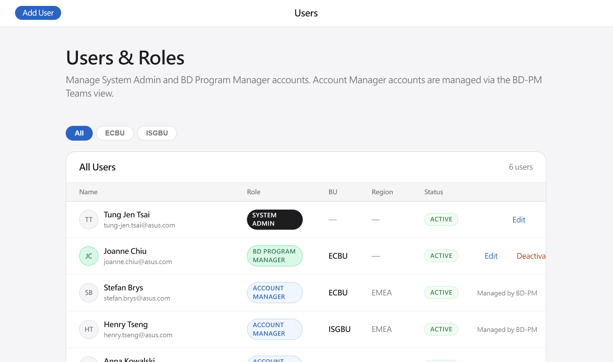 |
顯示欄位 |
| |
新增使用者 | 角色欄位單選（Admin / BD / AM），不允許複選 |
帳號 Inactive 規則 & 交接流程：
操作權限：僅 Admin 可將 BD、Admin、AM 帳號設為 Inactive；帳號 Inactive 後不可重新 Active。
被停用角色 | 名下 Partner 判斷 | Successor 規則 | 確認後處理 |
|---|---|---|---|
BD | 查詢 | 有 Partner 時必填；僅顯示 Active BD，不限制 BU / Region | 將全部 Partner 的 |
Admin | 查詢 | 有 Partner 時必填；僅顯示 Active Admin，不限制 BU / Region | 將全部跨 BU Partner 的 |
AM | 查詢 | 選填；若選擇 Successor，僅顯示相同 BU / Region 的 Active AM | 有選擇：批次更新 |
共通規則：
- BD / Admin 名下有 Partner 時，Successor 未選擇前 Confirm 按鈕停用，不允許先停用再補交接。
- BD / Admin 名下無 Partner 時，可不指定 Successor，直接設為 Inactive。
- Successor 必須與被停用帳號具有相同 Role（BD → BD、Admin → Admin、AM → AM）。
- 交接、清空指派及帳號狀態異動均寫入 Audit Trail（actor / target_user / successor_id / affected_partner_count / timestamp）。
- 不再使用 pending / resolved 或事後補指派流程。
User Role／Scope 變更交接規則
目標：Admin 編輯既有 User 的 Role、BU 或 Region 時，先檢查原職責下是否仍有 Partner；若變更會使原有 owner / AM 指派關係失效，必須先完成 Successor 交接。
判斷原則：Successor 候選與受影響 Partner 均依變更前的 Role / BU / Region 判斷，不依變更後資料判斷。
變更情境 | 受影響 Partner 查詢 | Successor 規則 | 確認後處理 |
|---|---|---|---|
任意 User Role 變更 | 原 Role = BD / Admin： | 有 Partner 時必填；Successor 必須與原 Role 相同 | 先將原職責下全部 Partner 交接給 Successor，再更新 User Role |
BD 變更 BU |
| 有 Partner 時必填；僅顯示 Active BD，且須屬於原 BU | 將全部 |
Admin 變更為 BD |
| 有 Partner 時必填；僅顯示 Active Admin，不限制 BU / Region | 將全部跨 BU Partner 轉移給 Admin Successor，再將 User Role 更新為 BD |
AM 變更 BU 或 Region |
| 有 Partner 時必填；僅顯示與原 BU / Region 相同的 Active AM | 批次更新 |
原 Role 對應交接規則：
- 原 Role = BD：Successor 為相同原 BU 的 Active BD。
- 原 Role = Admin：Successor 為 Active Admin，不限制 BU / Region。
- 原 Role = AM：Successor 為相同原 BU / Region 的 Active AM。
- Successor 候選不可包含被編輯帳號本人。
- 即使新 Role 仍具備 Partner 管理權限，只要 Role 改變，仍須完成舊 Role 的職責交接。
UI / 儲存流程：
- Admin 修改 Role、BU 或 Region 後，系統即時執行 Partner Impact Check 並顯示受影響 Partner 數量。
- 受影響數量大於 0 時，顯示 Successor（Required）欄位；未選擇前 Save 按鈕停用。
- 若使用者將欄位改回原值，清除 Impact Check 結果並隱藏 Successor 欄位。
- 送出時重新查詢受影響 Partner，避免頁面開啟期間資料已被其他使用者異動。
- Partner 交接與 User Role / BU / Region 更新必須在同一 transaction 完成；任一步驟失敗則全部 rollback。
- 寫入 Audit Trail：transition_type、from / to Role、from / to BU、from / to Region、successor_id、affected_partner_count、actor、timestamp。
與 Inactive 規則差異：AM Inactive 時 Successor 為選填且可清空 assigned_am；AM 變更 BU / Region 或 Role 時，只要名下有 Partner，Successor 必填，不可直接清空。
新增使用者 — 表單欄位規格
欄位 | 輸入型態 | 必填 | 說明 |
|---|---|---|---|
Name | 文字輸入 | ✓ | 顯示於人員清單與 AM/BD 指派欄位 |
文字輸入 | ✓ | 系統登入帳號；需為公司 Email；不可重複 | |
Role | 單選（Dropdown） | ✓ | Admin / BD / AM；三者互斥，不允許複選；選擇後決定 BU / Region 是否必填 |
BU | 單選（Dropdown） | AM / BD 必填 | ECBU / ISGBU；Role = AM 時,選擇 BU 則須同步顯示 Region 可選範圍 |
Region | 單選（Dropdown，依 BU 動態填入） | AM 必填；BD 非必填 | EMEA / APAC / Global；Role = AM 時需要選擇此欄位 or 顯示此欄位供選擇 |
狀態 | 自動設定 | — | 新建帳號預設 Active；Inactive 後不可重新 Active |
4.2 系統設定（admin-settings.html）
Section | Name | 功能 | Mock up |
|---|---|---|---|
Section 1 | Notification Preferences | 通知偏好 5 個開關：Partner 提交通知、Partner 開啟邀請連結、新詢問通知、核准通知、退回通知；各自設定預設收件人） | 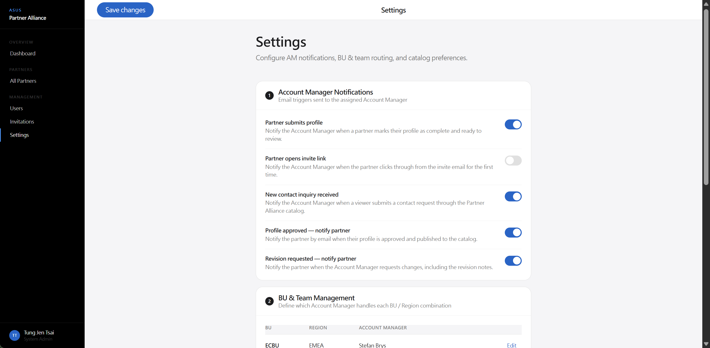 |
Section 2 | BU & Region Management | BU & Region 管理 欄位：
操作：
AM 由 User List 建立帳號時選定，不含於路由表 | |
Section 3 | Notification Email Template Management | 通知信模板管理（N0–N6 預設 Subject / Body 由 System Admin 統一設定與編輯） |
Section 1 — Notification Preferences
目標：設定各事件觸發後的通知開關及預設收件人。
開關名稱 | 預設 | 收件人 | 說明 |
|---|---|---|---|
Partner submits profile | 開啟 | 指派 AM + 建立此 Partner 的 BD | Partner 完成填表並提交 |
New contact inquiry received | 開啟 | BD | Viewer 於前台提交詢問 |
Profile approved — notify partner | 開啟 | Partner | AM 核准後通知 Partner |
Revision requested — notify partner | 開啟 | Partner | AM 請求修改後通知 Partner，含修改說明 |
Section 2 — BU & Region Management
目標：定義系統支援的 BU / Region / Partner Type 組合結構，供 AM 建立帳號時選擇歸屬。
欄位：BU、Region、Type（ISV/SI）
操作：新增 / 編輯 / 刪除
注意：路由表不含 AM 欄位；AM 所屬 BU + Region 於 admin-users.html 建立帳號時選擇，且於此路由表中對應的組合須存在。
Section 3 — Notification Email Template Management
目標：System Admin 可統一編輯 N0–N6 七封通知信的預設 Subject 與 Body 模板，作為全系統發信的初始內容。
通知 | 名稱 | 發送方式 | 可編輯欄位 |
|---|---|---|---|
N0 | 指派通知（BD 指派 AM → AM） | 系統自動 | Subject、Body |
N1 | 邀請信（Magic Link Invitation → Partner） | Mail 編輯窗口 | Subject、Body |
N2 | 提交通知（Partner Submitted → 指派 AM + 建立此 Partner 的 BD） | 系統自動 | Subject、Body |
N3 | 核准通知（Approved → Partner） | Mail 編輯窗口 | Subject、Body |
N4 | 退回通知（Editing → Partner） | Mail 編輯窗口 | Subject、Body |
N5 | 提醒信（Reminder → Partner） | 系統自動 | Subject、Body |
N6 | 新詢問通知（New Contact Inquiry → 給所有 BD） | 系統自動 | Subject、Body |
操作規則：
- 每封通知信各有獨立的 Subject 欄位與 Body 富文本編輯區，支援佔位變數（{COMPANY_NAME}、{MAGIC_LINK}、{EXPIRY_DATE}、{AM_NAME}、{AM_EMAIL}、{AM_COMMENT}、{SUBMITTED_AT}、{BU}、{REGION}、{BD_EMAIL}、{VIEWER_NAME}、{VIEWER_EMAIL}、{VIEWER_COMPANY}、{PARTNER_NAME}、{INQUIRY_MESSAGE}）
- {AM_NAME}、{AM_EMAIL} 於 N3 / N4 發送時解析為實際操作人（AM 或 BD）；當操作人為 BD 且非指派 AM 時，N3 / N4 自動 CC 指派 AM
- 修改後的模板即為系統預設值；下次觸發發信時套用更新後的版本
- Mail 編輯窗口（N1、N3、N4）中，AM 或 BD 仍可於發送前針對個別信件再次手動調整，不影響已儲存的模板
- N0、N2、N5、N6 為系統自動發送，Admin 修改模板後，下次自動觸發時即生效
- 各模板修改記錄寫入 Audit Trail（actor / timestamp / field_changed）
UI 入口：admin-settings.html → Section 3「通知信模板管理」→ 六個折疊面板（N0–N6），各含 Subject 輸入框與 Body 富文本編輯器 + Save 按鈕。
預設模板內容（英文）
通知 | 預設 Subject | 預設 Body |
|---|---|---|
N0 | New Partner Assignment: {COMPANY_NAME} | Hi {AM_NAME}, You have been assigned as the Account Manager for {COMPANY_NAME} ({BU} / {REGION}). Please log in to the ASUS Partner Alliance portal to review the partner details and send an invitation when you are ready. Best regards, |
N1 | You're Invited to Join the ASUS Partner Alliance | Dear {COMPANY_NAME} Team, We are delighted to invite you to join the ASUS Partner Alliance program. Please complete your partner profile using the link below: {MAGIC_LINK} This link expires on {EXPIRY_DATE}. If you need assistance or a new link, please contact {AM_NAME} at {AM_EMAIL}. Best regards, |
N2 | Partner Profile Submitted: {COMPANY_NAME} | Hi {AM_NAME}, {COMPANY_NAME} has submitted their partner profile for your review. Submitted at: {SUBMITTED_AT} Please log in to the ASUS Partner Alliance portal to review the submission. Best regards, |
N3 | Your ASUS Partner Profile Has Been Approved | Dear {COMPANY_NAME} Team, Congratulations! Your partner profile has been reviewed and approved. Your profile is now live on the ASUS Partner Alliance catalog. If you have any questions, please don't hesitate to reach out. Best regards, |
N4 | Action Required: Updates Needed for Your ASUS Partner Profile | Dear {COMPANY_NAME} Team, Thank you for submitting your partner profile. After review, we'd like to request some updates before approval. Feedback from your Account Manager: Please update your profile using the link below: {MAGIC_LINK} This link expires on {EXPIRY_DATE}. If you need assistance, please contact {AM_NAME} at {AM_EMAIL}. Best regards, |
N5 | Reminder: Please Complete Your ASUS Partner Profile | Dear {COMPANY_NAME} Team, This is a friendly reminder that your ASUS Partner Alliance profile is still pending completion. Please complete your profile using the link below: {MAGIC_LINK} This link expires on {EXPIRY_DATE}. If you need assistance, please contact {AM_NAME} at {AM_EMAIL}. Best regards, |
N6 | New Partner Inquiry from {VIEWER_COMPANY} | Hi, A new inquiry has been received through the ASUS Partner Alliance catalog. Partner: {PARTNER_NAME} Message: Submitted at: {SUBMITTED_AT} Please log in to the ASUS Partner Alliance portal to respond. Best regards, |
4.3 Tag Management (admin-tags.html）
功能說明 : 對應 User 表單欄位中的 Tag 功能 f2 (Target Vertical)
| 欄位 | 說明 | |
|---|---|---|
| Title | 文字 : Tag Management | |
| Description | 文字 : Manage tags to organize partners, improve filtering, and simplify partner management. | |
| Tag Search | Search Bar : 可用於搜尋 Tag Name | |
| Tag List | 功能說明 : 顯示目前系統內的所有 Tag 每頁 20 筆，超過 20 筆則需要切換頁碼工具; 左下支援切換單頁多筆 20 - 50 -100 欄位 :
| 提供以下 tag 可先建立 : Logistics Computer Vision Edge AI Manufacturing Deep Learning MDM Retail |
| Add Tag | 功能說明 : 新增 Tag 欄位 :
|
|
5. AM 模組
5.0 功能總表
功能 | Name | 對應頁面 | 說明 | Mock up |
|---|---|---|---|---|
我的合作夥伴 | My Partners | pm-dashboard.html | 僅顯示該 AM 負責的合作夥伴
| 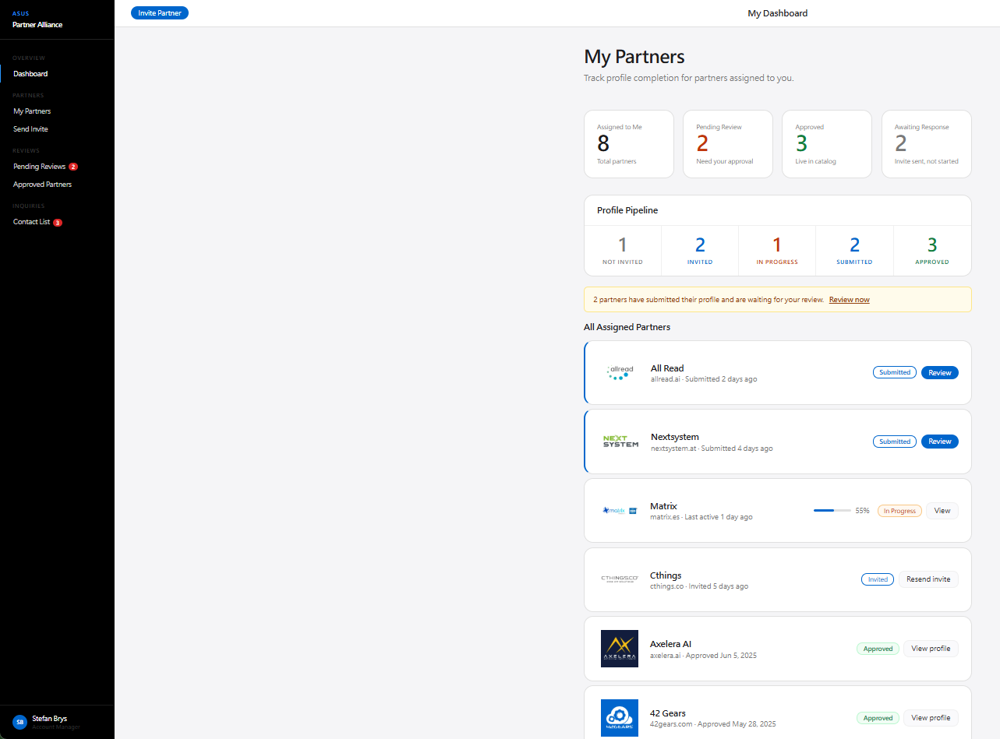 |
發送邀請 | Send Invite | pm-assign.html | 發送含 Magic Link 的邀請信 magic_link_sender 自動記錄為實際發送人（AM / BD） 觸發 Email 提醒排程 | |
| Invitation Management | admin-invitations.html | 設定 Magic Link 有效期（預設 7天*24= 168 小時） 首次提醒天數 後續提醒間隔 | |
| Review | pm-review.html | 三步驟審核（Reviewing → Approved / Editing） Mail 編輯窗口 Audit Trail 純後端儲存 | |
| - | pm-one-pager-preview.html | AM / BD approved 後自動觸發；預覽後決定是否發布 Cancel 不發布 / Approve → one_pager_status = Approved viewer-profile.html 提供 PDF 下載 |
5.1 我的合作夥伴（pm-dashboard.html）
目標： AM 一覽所有負責的合作夥伴現況、快速採取動作
KPI 計數卡（5 張，動態計算）：
計數卡 | 計算來源 |
|---|---|
Total Partners | 所有可見 rows |
Not Invited | data-status="not-invited" rows |
Invited | data-status="invited" rows |
Submitted | data-status="submitted" rows |
Approved | data-status="approved" rows |
Pipeline（7 狀態，可點擊篩選合作夥伴清單）：
狀態 | 說明 |
|---|---|
Not Invited | BD 已建立，尚未發送邀請（AM / BD 皆可發送） |
Invited | AM / BD 已發出 Magic Link，Partner 尚未開啟 |
In Progress | Partner 已開啟連結，正在填寫中 |
Submitted | Partner 已提交，等待 AM 審核 |
Reviewing | AM 已開啟審核頁面 |
Editing | AM 請求修改，Partner 重新填寫中 |
Approved | 已核准，顯示於前台公開目錄 |
Search bar：依公司名稱即時過濾合作夥伴清單
合作夥伴清單欄位：Company、Type（ISV/SI）、Level（Bronze/Silver/Gold）、Status badge、逾期標示（Invited 狀態超過首次提醒天數未提交）、More
More 操作按鈕矩陣（依當前狀態）：
當前狀態 | 按鈕 | 動作 |
|---|---|---|
Not Invited | Send Invite（Primary） | 前往 pm-assign.html 發送 Magic Link 邀請 |
Invited | Resend（Secondary） | 重新發送邀請信（更新 magic_link_sender） |
In Progress | （無按鈕） | — |
Submitted | Review（Primary） | 前往 pm-review.html 開始審核 |
Reviewing | Continue Review（Secondary） | 前往 pm-review.html 繼續審核 |
Editing | （無按鈕） | — |
Approved | View（Ghost） | 開啟合作夥伴資料頁，可編輯 |
5.2 發送邀請（pm-assign.html）
存取角色：AM / BD（BD 限所屬 BU）
情境 : AM & BD 點 Send Invite 按鈕 or Resend 按鈕，開啟此畫面 ; Resend 時僅開啟此區塊
功能 | 說明 | Mock up | |||||||
|---|---|---|---|---|---|---|---|---|---|
邀請信預覽 | 自動帶出 Admin 設定的 N1，可以進行編輯
以郵件樣式呈現邀請信完整內容（Mail-received style）；magic_link_sender 自動記錄為實際發送人（AM / BD）
| 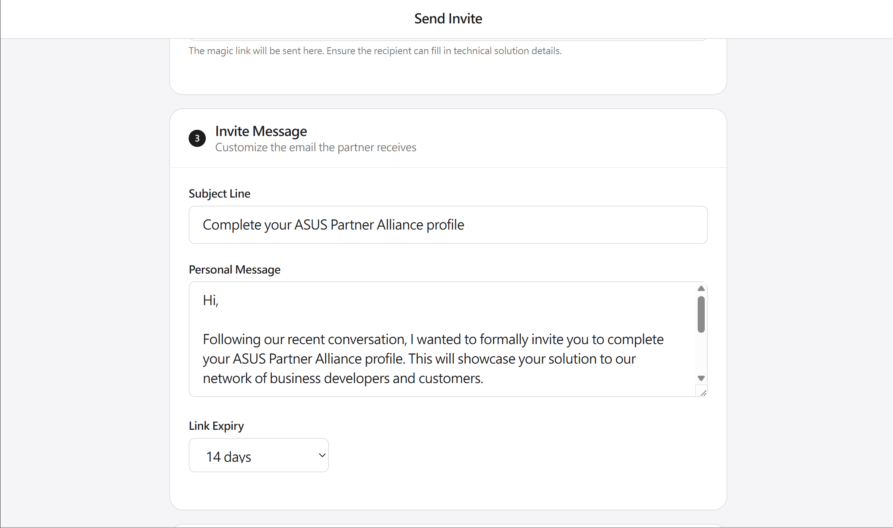 | |||||||
確認發送 | 送出後合作夥伴狀態更新為 Invited，並觸發 Email 提醒排程 |
5.3 邀請信管理（admin-invitations.html）
目標：
AM & BD 管理邀請信樣板與自動提醒節奏，此功能區塊併入在 AM & BD 點擊 Send Invite 後 Approved 5.2 發送邀請時同頁顯示，不另開獨立的 Menu 功能
Resend 時不顯示
可設定參數：
參數 | Name | 預設值 | 可調整範圍 | |
|---|---|---|---|---|
Magic Link 有效期 | Magic Link Expiration | 168 小時（7 天） | 24–1440 小時（1–60 天） | 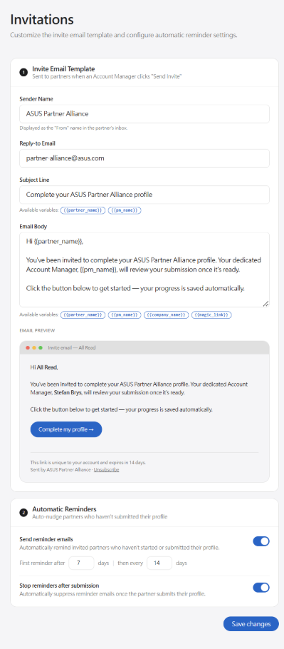 |
首次提醒觸發天數 | Send reminder emails | 邀請後 7 天未提交 | 1 – 30 天 | |
後續提醒間隔天數 | 首發後每 14 天 | 1 – 30 天 | ||
提交後停止提醒 | Stop reminders after submission | 開啟（預設） | 可關閉 |
Email 提醒排程示意：
| Day 0 | 邀請信發出，提醒排程啟動 |
| ↓ 7 天後 | |
| Day 7 | Partner 仍未提交 → 第 1 封提醒發出 |
| ↓ 14 天後 | |
| Day 21 | Partner 仍未提交 → 第 2 封提醒發出 |
| ↓ 14 天後 | |
| Day 35 | Partner 仍未提交 → 第 3 封提醒（後續每 14 天持續發送） |
| ↓ | |
| STOP | Partner 提交 / AM 或 BD 手動停止 / Magic Link 逾期 → 所有提醒停止 |
| 每位 Partner 每日最多收到 1 封（系統硬限制） | |
Magic Link 補發規則：
- Partner 無法自行申請重發
- AM & BD 皆可在後台手動重新發送；magic_link_sender 更新為最新發送人
5.4 審核合作夥伴資料（pm-review.html）
存取角色：AM / BD（BD 限所屬 BU）。當審核動作（Reviewing / Approved / Editing）之 actor 為 BD 且非指派 AM 時，系統自動通知指派 AM（N3 / N4 CC 指派 AM）。
審核流程：
| AM / BD 進入審核頁面（pm-review.html） | ||
| ↓ | ||
| 瀏覽合作夥伴填寫的 10 欄位內容 + 系統架構圖 | ||
| ↓ | ||
| 設定 Partner Level（Bronze / Silver / Gold） 可對照 bd-pm-checklist.html 的 Tier Checklist 評估 | ||
| ↓ | ||
| 填寫審核說明文字 | ||
| ↓ 點選 Review操作按鈕 | ||
| Reviewing （Submitted 狀態可執行） 狀態 → Reviewing 尚未出現於前台目錄 AM / BD 標記正式進入審核 | ||
① Save 狀態 → 維持 Reviewing | ② Approved ▸ Partner List 狀態變成 View | ③ Editing （Submitted 或 Reviewing 均可執行） 狀態 → Editing 生成新 Magic Link + 設定過期日 ▸ 觸發 Mail 編輯窗口 （退回通知模板 N4，含 Magic Link） |
| ↓ 點選 Save | ↓ 點選 Approved | ↓ 點選 Editing |
| 狀態 → 維持 Reviewing 暫存後台資料 | Approved 後系統自動進入 One-Pager 預覽（pm-one-pager-preview.html）
於審核合作夥伴資料頁，顯示 One-Pager 狀態欄位，點 Preview 可以再開啟預覽
| Editing → Partner 修改後重新提交 → 回到 Submitted |
| ↓ 點選 View 可以再次編輯 | ||
| 原 Approved 按鈕改成 Republish 修改後點 Republish AM / BD 於 One-Pager Preview 決定
| |
| 每次操作均寫入 Audit Trail（不可刪除） | ||
Mail 編輯窗口規格（Approved / Editing 觸發共用）：
項目 | 規格 |
|---|---|
觸發時機 | AM / BD 點擊 Approved 或 Editing 後彈出 Modal |
視窗形式 | Modal（遮罩覆蓋審核頁面） |
To | Partner 聯絡人 Email（自動帶入，唯讀） |
Subject | 預設模板標題（可手動修改） |
Body | 預設模板內文（可手動修改，富文本） |
Editing 專屬 | Magic Link URL（唯讀，自動嵌入 Body 模板）；過期日期選擇器（預設 7 天後） |
操作按鈕 | Send（確認：執行狀態變更 + 寄出 Email）/ Cancel（取消，不執行狀態變更） |
發送記錄 | 寄出後自動寫入 Audit Trail（actor / timestamp / action / email_sent = true） |
Audit Trail 規格：
欄位 | 說明 |
|---|---|
actor | AM / BD 姓名（自後台 session 取得） |
timestamp | 操作時的 UTC 時間 |
action | Reviewing / Approved / Editing |
comment | AM / BD 填寫的審核說明文字 |
email_sent | 是否寄出通知 Email（Approved / Editing 操作時為 true） |
partner_id | 關聯的合作夥伴 ID |
注意：Audit Trail 為純後端儲存紀錄，不顯示於 pm-review.html 頁面上。
5.5 One-Pager 生成與發布（pm-one-pager-preview.html）
目標： AM / BD 在合作夥伴審核通過（Approved）後，系統自動生成 One-Pager 預覽；操作人確認後決定是否發布至前台目錄（BD 流程完全比照 AM）。
觸發條件與入口：
項目 | 規格 |
|---|---|
觸發條件 | AM / BD 於 pm-review.html 點擊「Approved」→ Mail 送出後，系統自動導向 |
觸發入口 | pm-review.html Approved 流程（Mail 送出後）自動進入；或 pm-dashboard.html / bd-pm-dashboard.html 合作夥伴列操作按鈕（Approved 狀態，one_pager_status = 預設為 Draft; 在 one_page 點了 Approved ，one_pager_status = approved） |
按鈕文字 | —（pm-review.html 流程自動進入；pm-dashboard.html / bd-pm-dashboard.html 操作按鈕顯示「進入 One-Pager 預覽」） |
操作角色 | AM / BD（AM 限負責之 Partner；BD 限所屬 BU） |
One-Pager 生成流程：
| AM or BD 點擊「Approved」後，系統自動生成 One-Pager Preview 觸發條件：pm-review.html Approved + Mail 送出完成 | |
| ↓ | |
| 開啟 pm-one-pager-preview.html 系統依合作夥伴資料（10 欄位 + 架構圖 + Level + Logo）自動填入 One-Pager 版型 | |
| ↓ | |
| AM 檢視 One-Pager 預覽 版型與 PDF 輸出完全一致（前端已確認可行） | |
| ↓ | |
| Cancel 返回上一頁 one_pager_status 維持 Draft 前台不顯示 PDF 下載按鈕 | Approved one_pager_status → Approved 後台顯示成功 Toast 前台 viewer-profile.html 顯示「下載 One-Pager (PDF)」按鈕 |
pm-one-pager-preview.html 頁面規格：
項目 | 規格 |
|---|---|
版型 | 全頁面預覽，與 PDF 輸出版型完全一致（CSS @page / html2pdf / puppeteer — 前端已確認可行） |
內容來源 | 自動填入：公司名稱、Logo、Level chip、10 欄位、系統架構圖 |
操作按鈕 | Cancel（返回，不發布）/ Approved（發布，one_pager_status → Approved） |
發布後再進入 | 顯示已發布狀態，可選「Regenerate」（覆蓋現有 PDF，說明 AM & BD 可能會調整排版） |
版型基準文件 | TBD — 參考設計等待提供（D. 確認項目 T-2） |
前台效果（viewer-profile.html）：
條件 | 顯示 |
|---|---|
one_pager_status = Draft / 前一步檢視 Preview 狀態點擊狀態為 Cancel | 不顯示 PDF 下載按鈕 |
one_pager_status = Approved | 顯示「下載 One-Pager (PDF)」按鈕（Content-Disposition: attachment） |
6. 資料模型
6.1 Partner 記錄
欄位 | 類型 | 說明 |
|---|---|---|
string | — | |
logo_url | string | — |
partner_type | enum | ISV / SI |
level | enum | Bronze / Silver / Gold (預設 None) |
bu | enum | ECBU / ISGBU |
region | enum | EMEA / APAC / Global |
assigned_am | string / null | 目前指派的 AM user_id；AM 停用且未指定 Successor 時清空為 null |
created_by | string | 原始建立者 user_id（BD / Admin），建立後永久保留供 Audit |
owner_id | string | 目前名下負責人 user_id（BD / Admin）；初始值等於 created_by，帳號停用交接時更新為 Successor |
owner_role | enum | BD / Admin；與 owner_id 對應 |
status | enum | not-invited / invited / in-progress / submitted / reviewing / editing / approved |
magic_link | string | — |
magic_link_sender | string | 最新發送邀請的 AM / BD user_id |
magic_link_expiry | timestamp | 以小時計算；逾期後所有提醒停止 |
magic_link_draft | boolean | Partner 填寫中途儲存草稿；Draft 不計入有效期 |
intro | text | Corporate Introduction |
f1 | string | Solution Name |
f2 | string | Target Vertical |
f3 | string | Target Use-case |
f4 | string | Hardware Components |
f5 | string | Software Components |
f6 | string | Challenges |
f7 | string | Solution Description |
f8 | string | Technology |
f9 | string | Value Propositions |
architecture_diagram_url | string | — |
company_website | string | — |
am_notes | text | 僅後台可見 |
one_pager_status | enum | Draft / Approved |
one_pager_url | string | — |
audit_trail | array | [{action, actor, timestamp, note}] |
6.2 User 記錄
欄位 | 類型 | 說明 |
|---|---|---|
name | string | 姓名 |
string | 公司 Email | |
role | enum | Admin / BD / AM（單一，三者互斥） |
bu | string | AM & BD 所屬 BU（建立帳號時選擇；Admin 為跨 BU） |
region | string | AM 所屬 Region（建立帳號時選擇） |
status | enum | Active / Inactive |
successor_id | string / null | 最近一次 Inactive、Role 或 Scope 變更所選擇的同原 Role Successor user_id；依各流程規則決定是否必填 |
transition_history | array | [{transition_type, from_role, to_role, from_bu, to_bu, from_region, to_region, successor_id, affected_partner_count, actor, timestamp}]；記錄帳號 Inactive、Role 與 Scope 變更歷程 |
6.3 Inquiry 記錄
欄位 | 類型 | 說明 |
|---|---|---|
inquiry_id | string | 自動生成 |
created_at | timestamp | Viewer 提交時間（UTC） |
viewer_name | string | Viewer 填寫的姓名 |
viewer_email | string | Viewer 填寫的 Email（必填） |
viewer_company | string | Viewer 填寫的公司名稱（必填） |
partner_id | string | 詢問對象的 Partner |
message | text | 詢問內容全文（必填） |
status | enum | New / Replied / Closed |
reply_to_email | string | Viewer Email（展開後顯示，可 mailto） |
close_reason | text | 關閉原因（必填）；BD/Admin 執行 Close 時填寫；儲存於 inquiry card，僅後台可見；顯示於 View thread |
thread_log | array | 操作紀錄陣列；每筆含 event_type（forward / reply / close）、actor、timestamp、to、subject、body、close_reason（依事件類型）；不可刪除；View thread 從此欄位渲染 |
7. 後台版型配置
版型 | 適用頁面 | 結構說明 |
|---|---|---|
Dashboard | admin-*.html, pm-*.html, bd-pm-*.html, bd-catalog.html | .layout → .sidebar（固定 220px，黑色）+ .main → .topbar（置頂 52px）+ .content（最大寬度 960px） |
後台頁面清單：
頁面 | 角色 | 用途 |
|---|---|---|
bd-pm-dashboard.html | BD | 合作夥伴 Pipeline，AM 篩選，狀態對應操作按鈕矩陣（Send Invite / Resend / Review / View / One-Pager / Assign / Re-assign）；預設排序依公司名稱升冪 |
bd-pm-add-partner.html | BD | 新增合作夥伴 + AM 指派；Partner Level 預設 None；含 Partner Logo 上傳 |
bd-pm-checklist.html | BD | Tier Qualification Checklist（Bronze / Silver / Gold） |
bd-catalog.html | BD / Admin | 全 ASUS Approved Partner 內部目錄；BD 本人名下 Edit、其他 View；Admin 全部 Edit |
admin-dashboard.html | Admin | 跨 BU 合作夥伴列表（唯讀） |
admin-users.html | Admin | 內部帳號管理；可將 BD / Admin / AM 設為 Inactive；編輯 User Role / BU / Region 時執行 Partner Impact Check，必要時強制指定 Successor 後完成交接 |
admin-invitations.html | AM / BD | 邀請信樣板 + Email 提醒設定（AM & BD 皆可設定 Magic Link 有效期） |
admin-settings.html | Admin | 系統設定、路由表 |
pm-dashboard.html | AM | 我的合作夥伴 |
pm-assign.html | AM / BD | 發送邀請；magic_link_sender 記錄為實際發送人（AM / BD） |
pm-review.html | AM / BD | 審核（Reviewing / Approved / Editing 三按鈕）+ Mail 編輯窗口 + Audit Trail；BD 限所屬 BU |
pm-one-pager-preview.html | AM / BD | One-Pager 預覽與發布（AM / BD 點擊 Approved 後系統自動導向；Cancel 不發布 / Approved → one_pager_status = Approved） |
pm-contact-list.html | BD / Admin（AM 不可見） | Viewer 詢問管理；3 狀態：New / Replied / Closed；Forward / Reply directly / Close（含 Close reason） |
Sidebar Persona：
- BD sidebar：Joanne Chiu（縮寫 JC，綠色頭像 #047857）
- Admin sidebar：Tung Jen Tsai（縮寫 TT）
- AM sidebar：Stefan Brys（縮寫 SB）
8. 待確認事項（TBD）
項目 | 說明 | 負責人 |
|---|---|---|
Tier Checklist 問題清單 | Bronze / Silver / Gold 完整 Checklist 題目待確認，目前 Bronze 為佔位（TBD），Silver 6 項 / Gold 4 項均為草稿 | Silva / Joanne |
One-Pager 版型設計參考 | 是否有其他公司的 Partner One-Pager 設計可參考？目前樣本：OnePager/cthings-one-pager.html；版型基準待確認（D. 確認項目 T-2） | TBD |
Logo / 系統架構圖解析度 | 確認 Partner 上傳的 Logo 與系統架構圖最低解析度規格（D. 確認項目 T-3） | TBD |
9. 風險
風險 | 等級 | 緩解策略 |
|---|---|---|
AM 離職／停用時，合作夥伴孤兒化 | 高 | 停用前顯示警告，強制確認或重新指派 |
多 AM 同時審核同一 Partner（競態） | 低 | 後端實作樂觀鎖或審核鎖定機制 |
後台 Session 劫持 | 中 | HTTPS 強制、Session Token 輪換、CSRF 防護 |
BD + Admin 雙重角色被指派 | 中 | UI 單選 + 後端驗證雙重阻擋 |
提醒信觸發超過每日上限 | 低 | 系統層硬限制每人每日最多 1 封，與排程邏輯無關 |
One-Pager 預覽與 PDF 輸出不一致 | 中 | 前端已確認可行；需在驗收測試中以實際 PDF 輸出比對預覽版型，確保像素一致 |